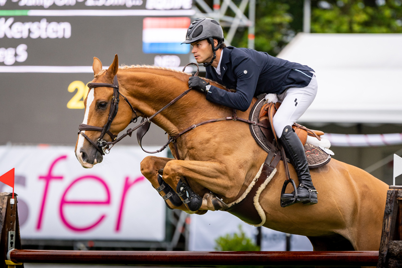

Gijón Horse Show - Concurso de Saltos Internacional

Tradición y Elegancia en el Hipódromo de Las Mestas
El Gijón Horse Show es una de las citas hípicas más importantes del calendario internacional. Cada año, el emblemático Hipódromo de Las Mestas se viste de gala para acoger el Concurso de Saltos Internacional (CSIO), donde jinetes y amazonas de élite mundial compiten en pruebas de máxima exigencia.
La competición destaca por la espectacularidad de su pista de hierba y, especialmente, por la vibrante Copa de Naciones. Pero Gijón es único gracias a su ambiente: las tradicionales apuestas populares, la música en directo tras las pruebas y el "Gijón Life" convierten este evento deportivo en un fenómeno social imprescindible en el verano asturiano.
En 2026, el concurso celebra una nueva edición consolidándose como un referente de la hípica europea, combinando la nobleza del caballo con una oferta de ocio, gastronomía y espectáculos nocturnos que enamoran a expertos y visitantes por igual.